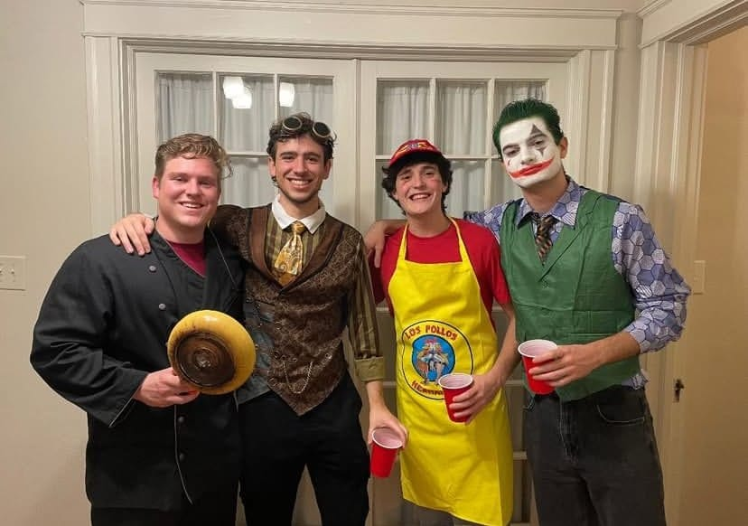

For a much-needed break from Texas, me and seven other Spaniards packed our bags (and our costumes) for a long weekend getaway to a truly iconic American city: New Orleans for Halloween.
Let’s talk about the elephant in the room: Bourbon Street. I’ll be honest, it was… disappointing. Maybe the hype was too big, but the combination of overwhelming crowds and the, let's say, unique smell, made it an experience we were happy to check off the list and then move on from. The real magic of New Orleans, we discovered, was just a few blocks away.
What truly caught us off guard, in the best way possible, was the city's deep respect for its Spanish history. We were constantly surprised to see plaques and street names that referenced the time when New Orleans was part of the Spanish Empire. Seeing names like "Calle de" and historical markers detailing Spanish governance felt surreal. It was a strange and proud feeling to be a Spaniard walking down a street that still bore the name our ancestors gave it centuries ago.
The areas closer to the Mississippi River, like the French Quarter's Jackson Square, were absolutely beautiful. With the historic Spanish and French architecture, live jazz music floating through the air, and the buzz of artists, it felt like the authentic, cultured heart of the city. We also explored the more modern Garden District, with its stunning mansions and quiet, oak-lined streets. The contrast was striking.
The highlight of the trip was meeting up with a group of Spanish students who are on exchange at Tulane University. It was fantastic to compare notes on our American experiences and explore the city together. And of course, it was Halloween, so the costume game was strong. Our group was a walking, talking ensemble cast featuring Teletubbies, a rugged pirate, a brilliantly detailed steampunk adventurer, and myself, doing my best to channel the chaotic energy of The Joker.

Navigating the festive, costumed crowds with our little Spanish cohort, finding amazing food, and connecting with a forgotten piece of our own history made the trip unforgettable. It was a whirlwind of culture, both past and present—a perfect slice of America, enjoyed through a very Spanish lens.